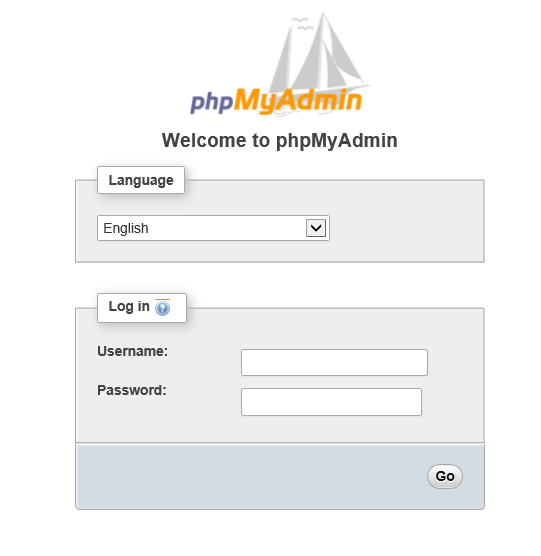
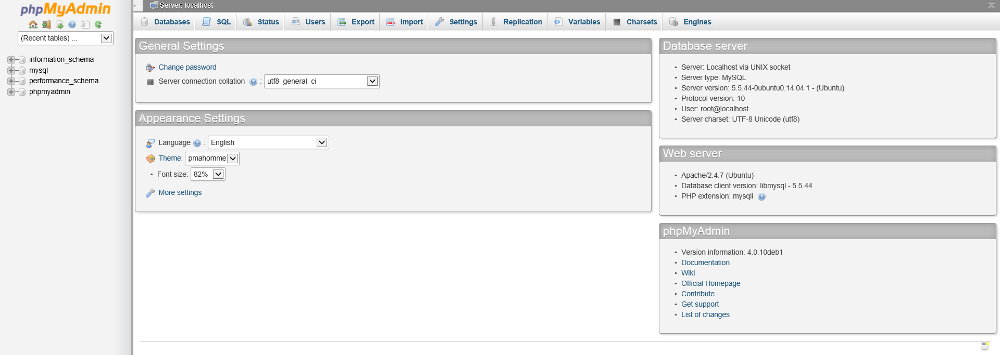

This article walks through installing and securing phpMyAdmin on your server.
Install and secure phpMyAdmin with Apache - Debian
Difficulty: 2
Time: 15 minutes
phpMyAdmin is an open source tool that enables users to perform MySQL™ database operations like create, delete, or modify MySQL databases or execute SQL statements, by providing a user interface.
Prerequisites
Make sure that you have LAMP (Linux™, Apache™, MySQL, and PHP™) installed. In case you haven't, refer to this article: Install LAMP.
Install phpMyAdmin
-
Make sure that the list of available packages are up-to-date.
sudo apt-get update
-
Install phpMyAdmin.
sudo apt-get install phpmyadmin
Enter y at the prompt to continue installation.
- A terminal screen appears. Even though apache2 is highlighted, it is not actually selected. To select apache2:
- Press SPACE. You will see an asterisk (*) at
apache2.
- Press TAB to move the cursor to OK, and press Enter on your keyboard.
- You will be asked to confirm a few things as part of configuring phpMyAdmin.
- When asked to configure database for phpMyAdmin with
dbconfig-common, choose Yes.
- When asked for the password for the database's administrative user, use the MySQL root password.
- When asked to set and confirm a password for MySQL application for phpMyAdmin, create a strong one and confirm it. If left blank, a random one will be generated. This is for logging into the phpMyAdmin application itself.
-
Make sure to add the application to the Apache configuration file. Open the file.
sudo vim /etc/apache2/apache2.conf
-
Add the following directive:
Include /etc/phpmyadmin/apache.conf
-
Restart Apache.
sudo service apache2 restart
-
In your browser, navigate to http://your server address or domain name/phpmyadmin to see the web interface. You will see a Welcome to phpMyAdmin page.

-
Log into the user interface using the username root and the MySQL root password. You will see the phpMyAdmin user interface.

Configure phpMyAdmin to be secure
Although your phpMyAdmin interface is up and running, you need to secure it further by adding another layer of authorization to prevent unauthorized users. You will do this in two steps.
-
Changing the default directory
-
Adding Apache authorization
Changing the default phpMyAdmin directory
The default installation of phpMyAdmin creates an alias to /usr/share/phpmyadmin. You can change the alias on the configuration file from /phpmyadmin to something else, in this case /mysqllogin. This way you fend off any automated attacks that are likely to go after the default directory on the web server.
- Open the configuration file.
sudo vim /etc/phpmyadmin/apache.conf
-
Comment out the line(s) that start with
Alias and replace with the new alias.
# Alias /phpmyadmin /usr/share/phpmyadmin
Alias /mysqllogin /usr/share/phpmyadmin
-
Save and exit the file.
- Restart Apache for the change to take effect.
sudo service apache2 restart
- You will now find the application at http://your server address or domain name/mysqllogin instead of http://your server address or domain name/phpmyadmin
Adding Apache authorization
We will also add Apache authorization to the phpMyAdmin directory with an .htaccess and .htpasswd file.
-
To allow the
.htaccess file access the phpMyAdmin directory, you need to make some changes in the phpmyadmin configuration file.
sudo vim /etc/phpmyadmin/apache.conf
-
Include the
AllowOverride All directive inside the <Directory /usr/share/phpmyadmin> module of the configuration file.
<Directory /usr/share/phpmyadmin>
Options FollowSymLinks
DirectoryIndex index.php
AllowOverride All
[.....]
- Save and close the file.
-
Restart Apache for the changes to take effect.
sudo service apache2 restart
Create .htaccess file
-
After you enable the
.hataccess, it is time to create the actual .htaccess file. This file will be inside the application directory.
sudo vim /usr/share/phpmyadmin/.htaccess
-
Enter the following block of text into the file.
AuthType Basic
AuthName "Restricted. Only authorized users permitted."
AuthUserFile /etc/phpmyadmin/.htpasswd
Require valid-user
Below is an explanation of what each of these mean:
| Directive |
Description |
| AuthType Basic |
Specifies the kind of authentication that is being implemented. "Basic" implies that it uses a password file to implement the password authentication. |
| AuthName |
Displays the message at the password prompt. You can set it to anything you want. |
| AuthUserFile | Indicates the location where you would store the password file. |
| Require valid-user | Indicates that only users who are stored in the password file will be granted access to the phpMyAdmin login screen. |
- Save and close the file.
Create user
-
Create a first user to be stored in the password file.
sudo htpasswd -c /etc/phpmyadmin/.htpasswd newuser1
-
Set and confirm password.
-
If you want to enter an additional user, do not use the
-c flag.
sudo htpasswd /etc/phpmyadmin/.htpasswd newuser2
-
Restart Apache for changes to take effect.
sudo service apache2 restart
- Now, when you navigate to the browser, and type http://your server address or domain name/mysqllogin, you will be presented with the username/password prompt. Enter the newuser1 credentials that you included in the
htpasswd file.
Next steps
You have successfully installed phpMyAdmin and provided additional security to accessing it. Now, you can set up SSL Certificate with phpMyAdmin.